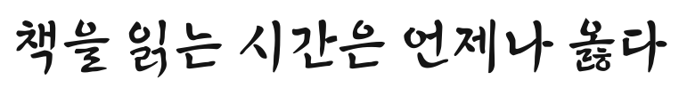

손글씨 · EBS 한국교육방송공사 · 굵기 3종 · 한글 11,172자
EBS 주시경체 EBSJSK Light
한글학자 주시경 선생의 이름을 딴 EBS 서체. 붓으로 힘 있게 쓴 획이라 교육 방송 자막·제목에 개성을 더합니다.

원본 폰트 견본 이미지소개 전용 폰트 — 배포처가 준 원본 파일(TTF·OTF)을 브라우저가 열지 못하고(파일 내부 표 손상), 라이선스상 사전 승인 없는 수정이 금지돼 고칠 수 없습니다. 원본 폰트로 만든 견본 이미지만 보여 드립니다. PC에 설치하면 정상으로 쓸 수 있습니다. 아래 원 배포처에서 받을 수 있습니다.
파일은 LETSUM이 아니라 원 배포처에서 내려받습니다. 이용 조건은 배포처 원문을 따릅니다. 설치·PPT 적용 방법은 홈의 상세 보기에 있습니다.
사용 범위 (라이선스 매트릭스)
EBS 서체 사용안내(한국교육방송공사) — 학교·개인·공공기관 누구나 무료, 영상·인쇄·웹·모바일 등 매체·용도 제한 없이 상업 사용 가능 / 사전 서면승인 없는 수정·역설계·개작·개명 재배포·재판매 금지, 부정적 이미지 제작물 사용 금지 · 검토 상태 원문 대조 완료 (최근 확인일 2026-10-17)
| 카테고리 | 사용 범위 | 허용 여부 |
|---|---|---|
| 인쇄 | 브로슈어, 포스터, 책, 잡지 및 출판용 인쇄물 등 | 사용 가능 |
| 웹사이트 | 웹페이지, 광고 배너, 메일, E-브로슈어 등 | 사용 가능 |
| 영상 | 유튜브, CF, 상업영화, 영상 자막, 크레딧 등 | 사용 가능 |
| 임베딩 | 웹사이트 및 프로그램 서버 내 폰트 탑재, E-book 제작 | 조건부 |
| BI/CI | 회사명, 브랜드명, 상품명, 로고, 마크, 슬로건 등 | 조건부 |
| 포장지 | 판매용 상품의 패키지 | 사용 가능 |
| 수정·재배포 | 폰트 파일의 수정·복제·재배포 가능 여부 (폰트 파일 단독 판매는 금지) | 사용 금지 |
설치 후 보이는 이름
같은 폰트라도 프로그램마다 이름이 다르게 보입니다. 폰트 파일 속 이름표에서 읽은 값입니다.
| 굵기 | Windows 앱 글꼴 목록 | Mac 서체 관리자·포토샵 | 포토샵 '글꼴 누락'(PostScript) |
|---|---|---|---|
| Light (300) | EBS주시경 Light | EBS주시경 Light / Regular | EBSJSKLight |
| Medium (500) | EBS주시경 Medium | EBS주시경 Medium / Regular | EBSJSKMedium |
| Bold (700) | EBS주시경 Bold | EBS주시경 Bold / Regular | EBSJSKBold |
사양
| 굵기 | 300 · 500 · 700 |
|---|---|
| 출시·배포일 | 원 출시일 확인 중 |
| 형식 | TTF |
| 한글 글자수 | 한글 11,172자 |
| 저작권자 | EBS 한국교육방송공사 |
| 태그 | 붓글씨, 제목, 교육, 강렬한, 고전적 |
※ 위 사용 범위는 참고용으로, 정확한 사용 범위는 이용 전 폰트 저작권자에게 확인하시기 바랍니다. 모든 폰트의 저작권은 각 저작권자에게 있으며, 다운로드는 원 배포처로 연결합니다.